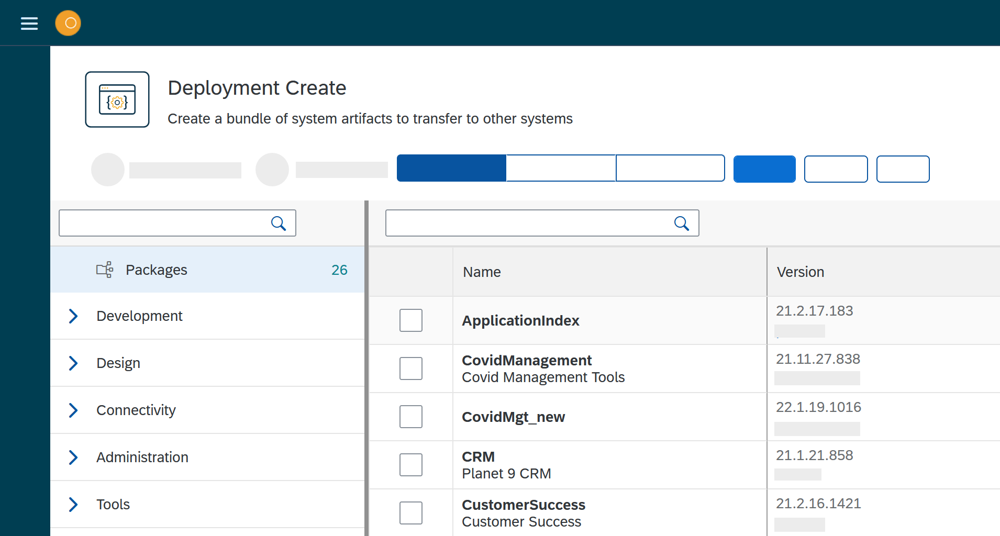
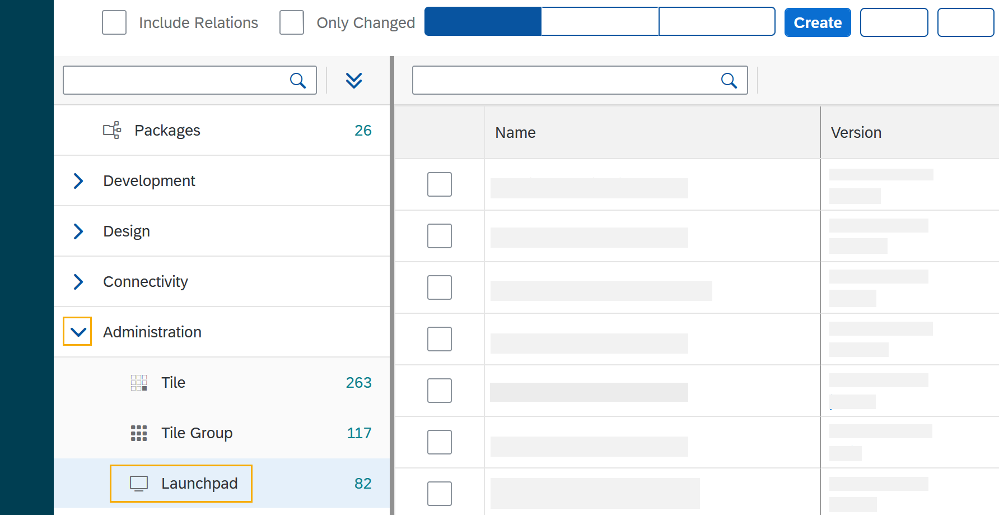

In this topic, you learn how you create deployment packages, how you deploy them from one system to another.
You have two options to create and to deploy a deployment package:
-
Create a deployment package and transferring it by selecting a route.
When using routes, you can transfer your package to any targeted system with one transfer process.
-
Create a deployment package and transferring it by selecting a system.
Prerequisites
-
Before you start a deployment process, make sure that the remote server system you want to send the deployment packages to is available. How to set up a remote system, see Remote System Setup.
-
Optional: You have selected a deployment authentication in Settings > Custom settings.
Procedure
-
Open Neptune DXP - Open Edition cockpit, navigate to Deployment, and click Deployment Create.
Result: The deployment create window opens
-
Click System or Routes.
-
Depending on the option you selected, check on the list one or more systems or routes, and click Start
Do not check any system or route if someone must first approve the deployment packages you create. In this case, click start. Result: The Deployment Create dialog opens.

-
Click Packages to select already existing packages.
The number next to Packages indicates the number of available packages. -
Check the package or packages you want to deploy.
-
Click the arrow next to the service group to select a service you want to deploy artifacts from. In the example, Launchpad from the Administration service group is selected.
The number next to the service indicates the number of available artefacts. Result Deployment create shows a list of all artifacts of the selected service.

-
Check the artifacts you want to add.
-
To add all the links/relations to selected artifacts, check Include relations. For example, if you select Launchpad, and you check Include relations, all the artifacts connected to Launchpad like Tile, Tile group, API, etc., will be deployed as well.
-
Click Create.
Result: The Deploy window opens.

-
Verify the packages you want to deploy by checking or unchecking artifacts.
-
If you did not select a route or a target system before, click Create. There is no other option available. If you selected a route or a target system before, you can choose between Create or Transfer.
-
Click Create to create the deployment package that must be approved.
-
Click Transfer to create the deployment package and deploy it on the selected target system.
Result: Depending on the steps you took before, Deployment Create creates packages, that must be approved or Deployment Create creates packages and transfers them to the selected remote system (for approval?). This will create your deployment package. Deployment Package will ask approval or transfer according to the deployment authentication selected in settings → customization component.
-